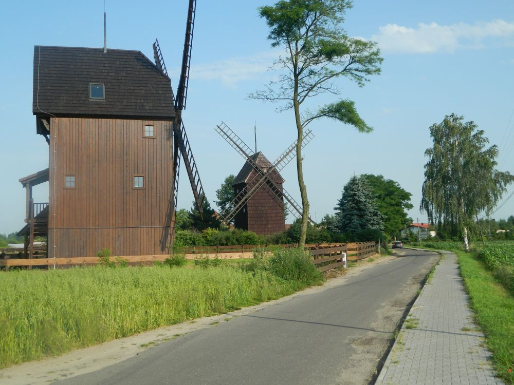
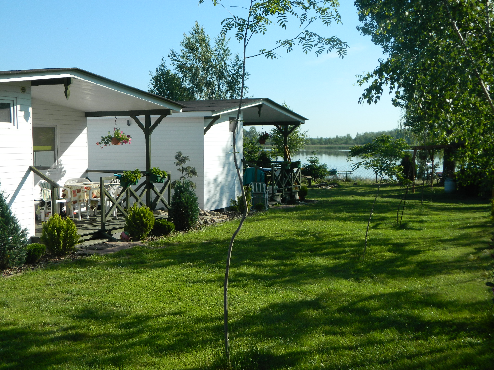
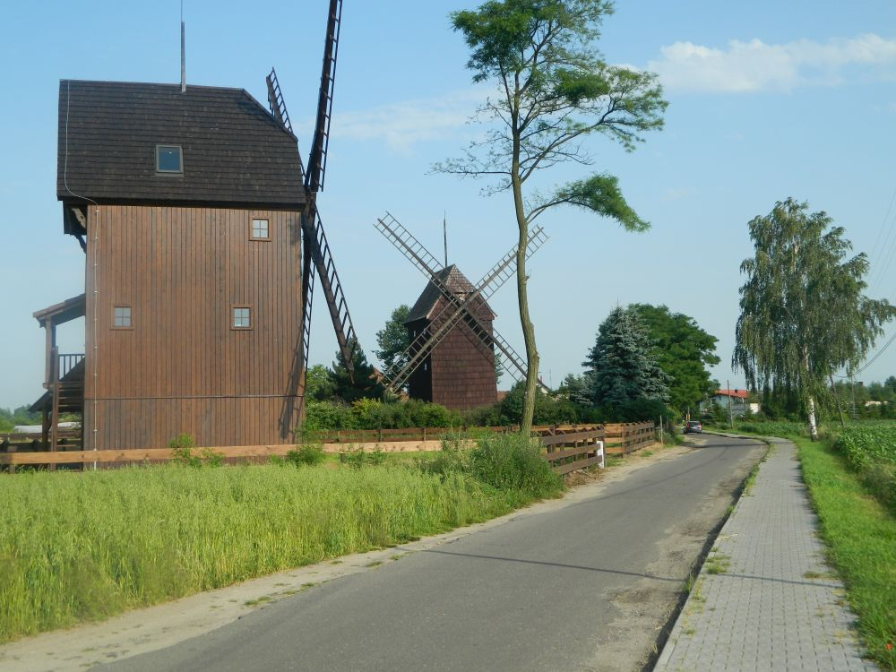
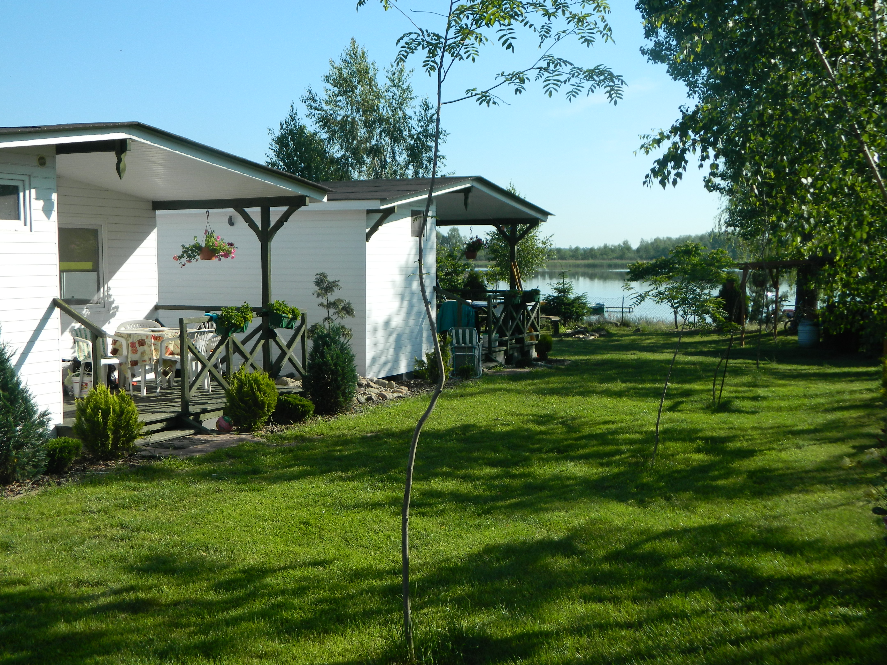

O nas
Gospodarstwo Agroturystyczne U KACPRA istnieje od 1999 roku. Ponad połowę naszych klientów stanowią rodziny z dziećmi, które od kilku lat przyjeżdżają w to samo miejsce. Plac zabaw, jezioro oraz liczne atrakcje przygotowane dla najmłodszych są gwarancją tego, że dzieci na pewno nie będą się u nas nudzić. W tym czasie rodzice mogą spokojnie obserwować swoje pociechy, ponieważ z każdego pokoju oraz domku jest bezpośredni widok na plac zabaw i jezioro. Wieczorne zabawy przy ognisku lub pod wigwamem są świetną okazją do zawarcia nowych znajomości oraz zapewnią niesamowite wspomnienia z wakacji.
Pare zdjęć z okolicy
 


